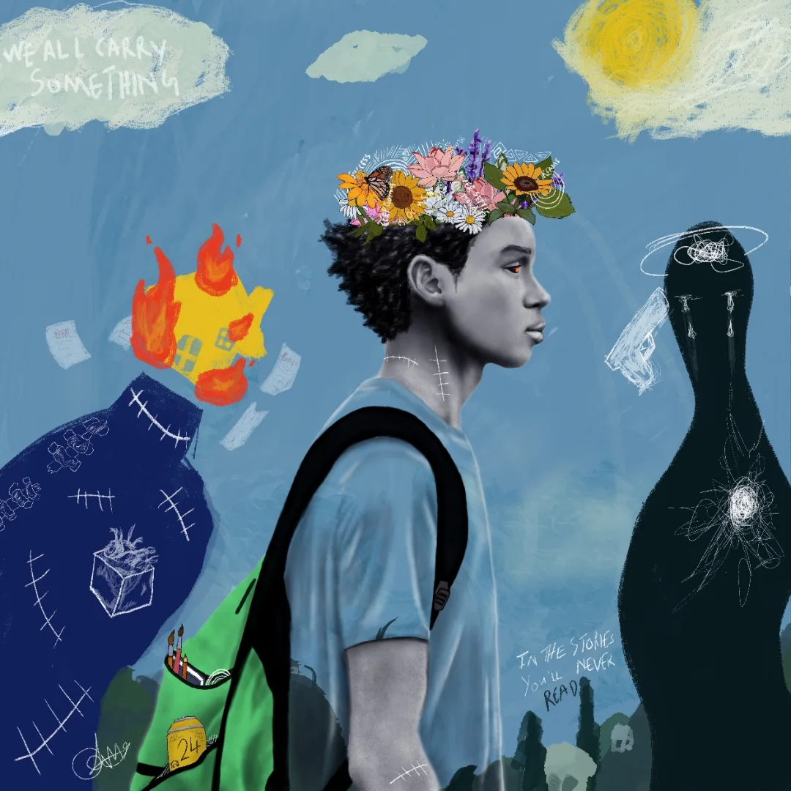
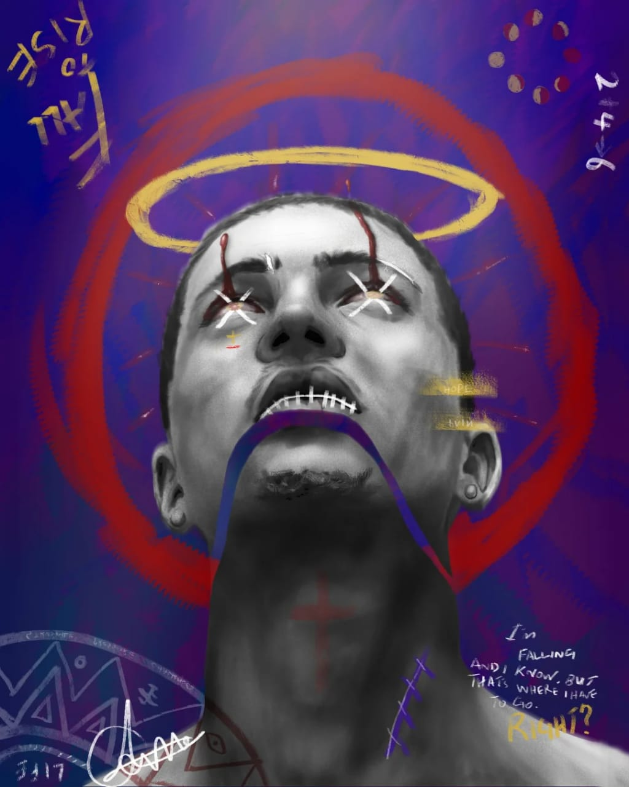
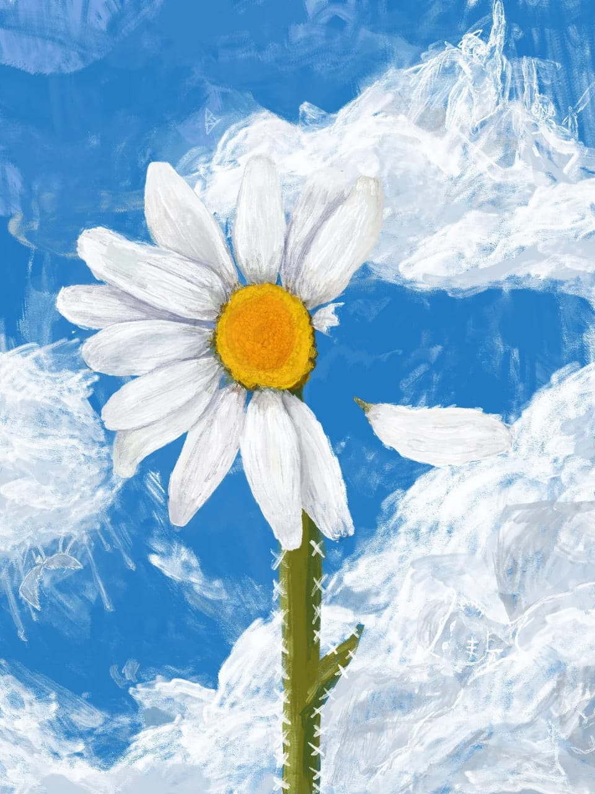
Artist • Storyteller • Benin City
@THE24THDAYY
Between where I'm from
and where I believe I'm going.
Between Life and a Canvas.
"Between where I'm from and where I believe I'm going. Between Life and a Canvas."
My work reflects a personal journey and the wider experience of a generation navigating disorder, imperfection, and the search for balance — using layered texture, symbolism, and distortion to create emotionally charged images that explore identity, memory, and transformation.
I approach the canvas as a space where things overlap, collide, and conflict, mirroring how life actually feels most times. Chaotic. Rawness is not something I correct — it is a tool I lean into, allowing the work to stay unresolved, honest, and human.
Each piece functions as both journal entry and visual experiment. My art is a journal, and I don't aim to explain everything. I want you to feel first, then question.
THE24THDAYY
b. 2001 • Benin City, Nigeria
Epiphany Oarhe — also known as The24thdayy — is a self-taught multidisciplinary artist whose practice explores identity, memory, history, and transformation through expressive figuration, layered textures, and symbols drawn from Nigerian culture and mythology.
Working primarily in digital painting, he approaches the canvas as a space where forms, colours, and emotions overlap and conflict. His process is intentionally free-flowing — merging realism, surrealism, and stylized figuration while building depth through texture, hand-drawn marks, and gestural strokes.
His work has been exhibited at galleries and festivals across Nigeria.
He is currently seeking international residencies, collaborations, and exhibition opportunities to expand his creative practice.
Get in Touch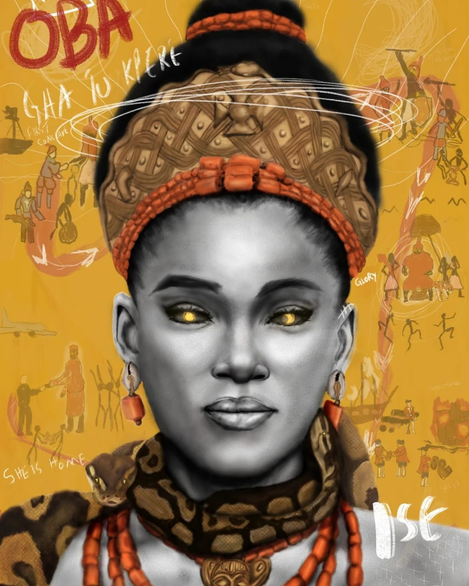
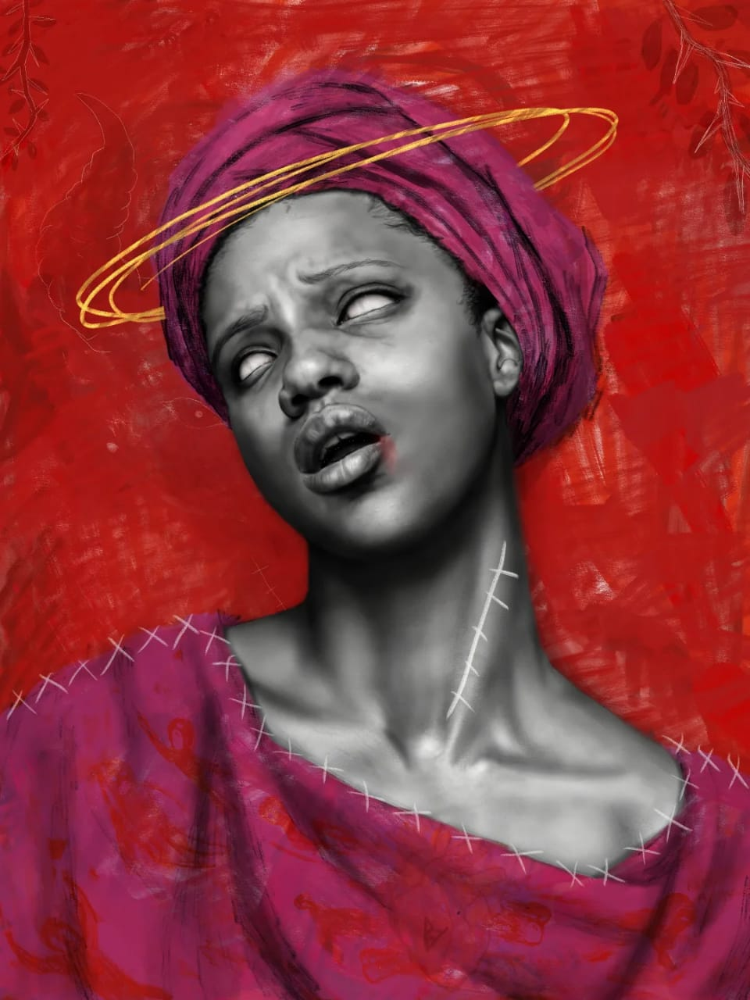
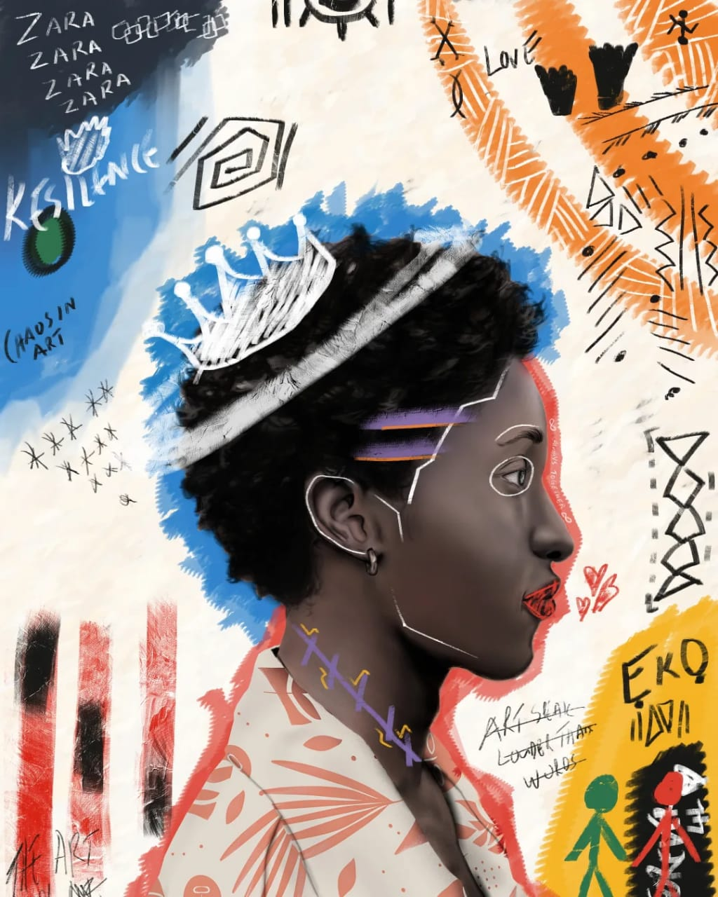
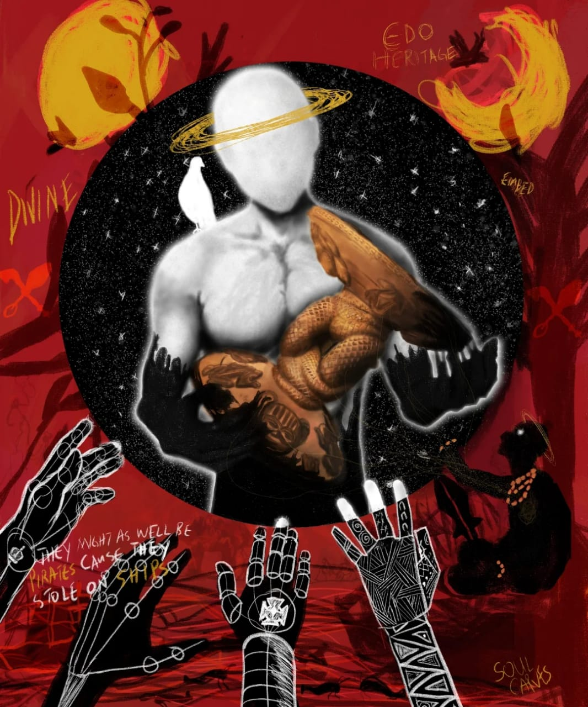
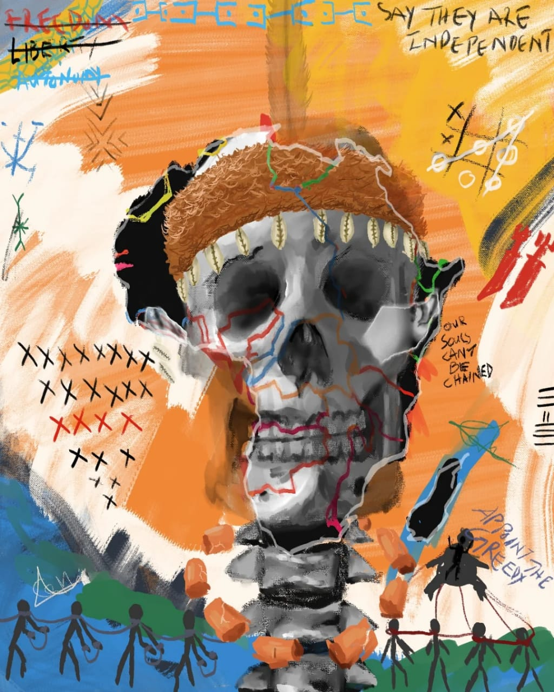
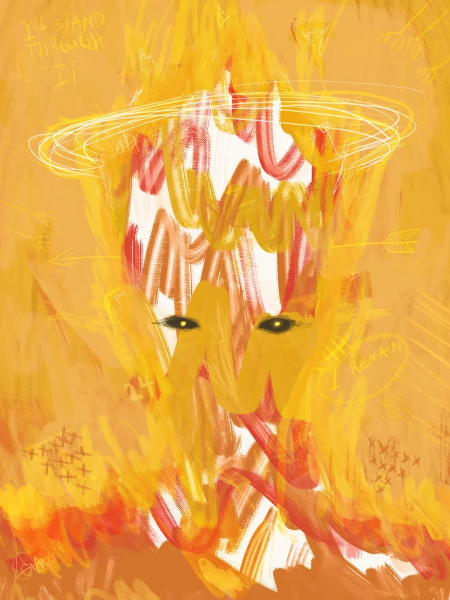
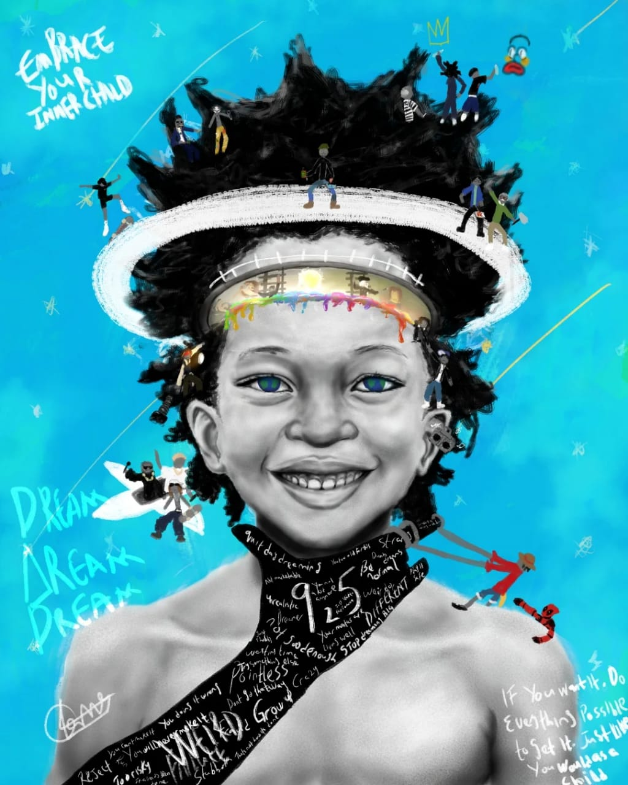
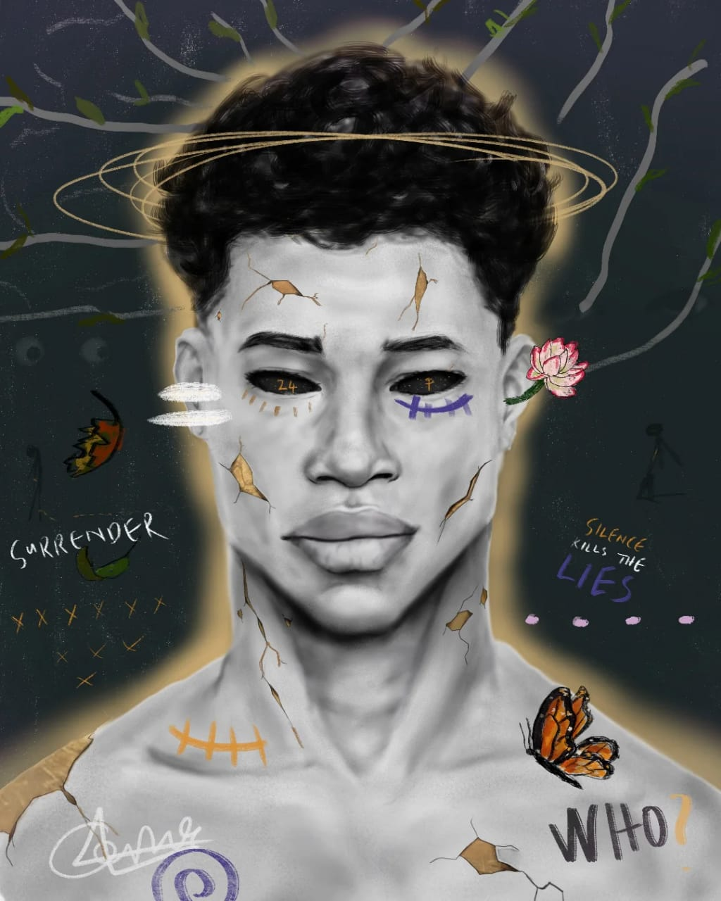
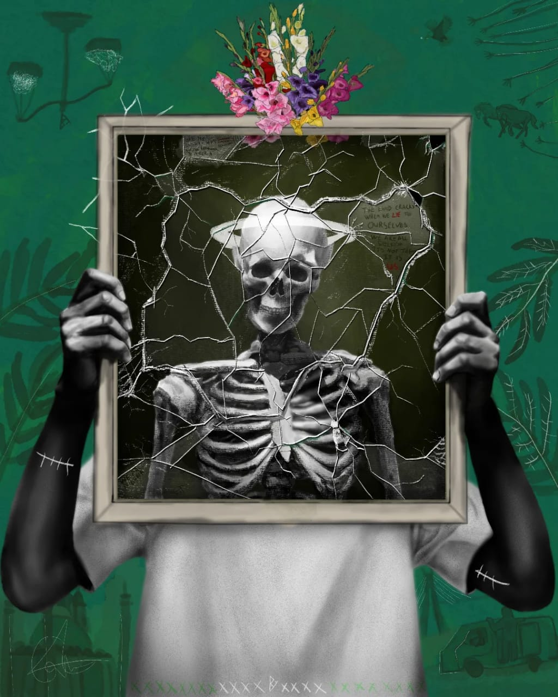
2025
The Benin Renaissance Residency & Exhibition
Benin National Museum, Benin City, Nigeria
2025
Fobally Lagos Easter Art Festival
JK Randle Centre for Yoruba Culture & History, Lagos
2025
The Benin Art Fair
Thought Pyramid Gallery, Benin City, Nigeria
2025
Benin Arts and Books Festival
EDO Innovation Hub, Benin City, Nigeria
2020 – 2024
Colorist & Editor — Blankpage Comics
Visual development for narrative comic projects
Epiphany's work stopped me in the middle of the gallery. There's a weight to it — an emotional honesty you rarely see in someone this young. His use of symbolism rooted in Edo culture feels both ancient and urgent.
Benin Art Fair, 2025
Working with Epiphany on Blankpage Comics was a privilege. His eye for colour and narrative pacing transformed our pages. He doesn't just colour — he tells a second story within the story.
2022
"Scramble For Africa" is one of the most politically charged and visually striking pieces I've seen at any Nigerian art festival this decade. Oarhe speaks in images the way poets speak in stanzas.
Fobally Lagos Easter Art Festival, 2025
His self-taught discipline is staggering. Epiphany has developed a visual language wholly his own — expressive, culturally grounded, and deeply personal. He is one of the voices to watch in African contemporary digital art.
Benin Renaissance Residency, 2025
What sets Epiphany apart is his refusal to resolve tension on the canvas. He lets chaos breathe, and in that space between order and disorder, something profoundly human emerges every time.
EDO Innovation Hub, 2025
Art is a dialogue, and I'd love to hear your thoughts on my work. If you're interested in an original piece, a print, or just want to say hello, please feel free to drop a message. I look forward to connecting with you.
Address
Epiphany Oarhe
Benin City, Nigeria
Availability
Open for collaborations
Mon – Sat
Follow Me
Let us know how to get back to you.